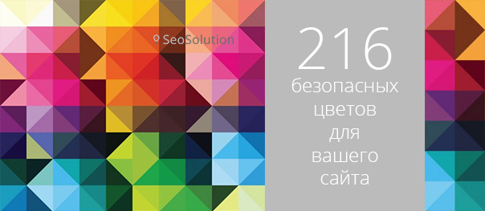

Оказывается, так заведено еще со времен популярности Netscape:
Пропускаемые цифры распознаются как 0[...]. Некорректные символы распознаются как 0.
Так что, например, значения #F0F0F0, F0F0F0, F0F0F, #FxFxFx и FxFxFx – одно и то же.
Подробнейший разбор алгоритма разбора приведен по ссылке . Если применить эти правила, то получим следующее:
Заменяем все неправильные шестнадцатеричные символы нулями 0, BruceWillis превращается в B00CE000000
“Добиваем” число нулями до количества знаков, делимого на 3 (11 -> 12),
получаем B00C E000 0000
Разбиваем на три группы, каждая из которых отвечает за одну компоненту RGB:
RGB (B00C, E000, 0000)
Обрезаем каждый из аргументов справа, оставляя 2 символа, и получаем наш результат:
RGB (b0, e0, 00) = #b0e000 или он же RGB (176, 224, 0).
Аналогичным образом получаем можно получить код цвета #CANDY:
#ca0d00 -> rgb(202, 13, 0)
«Безопасные», Web Safe или Browser Safe цвета – это палитра, состоящая из 216 оттенков, которые отображаются максимально точно независимо от монитора компьютера или выбранного браузера, способного отображать, по крайней мере, 8-ми битный цвет (256 цветов). Причина наличия в палитре только 216 вместо максимальных 256-ти цветов заключена в том, что именно эти основные цвета отображаются на всех компьютерах одинаково.
Более десяти лет назад, большинство компьютеров способно было отображать максимум 256 цветов одновременно. Причин было достаточно много, однако самой главной была высокая стоимость видеопамяти.
Определяли 256 цветов согласно математической формуле, а не по их эстетическим характеристикам, так как описывались они всего 8-мью битами компьютерной информации. Эта базовая палитра и включает в себя 216 цветов, которые сегодня мы называем «безопасными».
Web Safe цвета определяются таким градациями RGB: 0, 51, 102, 153, 204 и 255 (0, 33, 66, 99, СС, FF), которые указывают на процентное присутствие того или иного цвета: 0, 20, 40, 60, 80 и 100%.
Если ваш веб-сайт имеет какой-либо цветной фон, то лучше всего для этой цели использовать именно Web Safe цвета. Таким образом, это гарантирует вам, что цвет не будет смущать пользователя при отображении на разных компьютерных платформах. Не стоит забывать и о том, что даже старые компьютеры, которых еще сохранилось достаточно большое количество и все еще активно используются, будут представлять ресурс точно, без колебаний и различий в цветах.
Если вы создаете картинки, текст или любые другие элементы, стоит обращаться к Web Safe палитре, так как это позволит получать более чистое изображение, отображаемое и для вас, и для пользователя всегда одинаково.
К сожалению, точной инструкции по подбору правильной цветовой палитры, которая бы привлекала, а не отталкивала пользователя, нет. Это субъективное понятие. Однако обратившись к основной «безопасной» палитре вы сможете не сомневаться в том, что каждый точно воспринимает представленный на сайте цвет.
